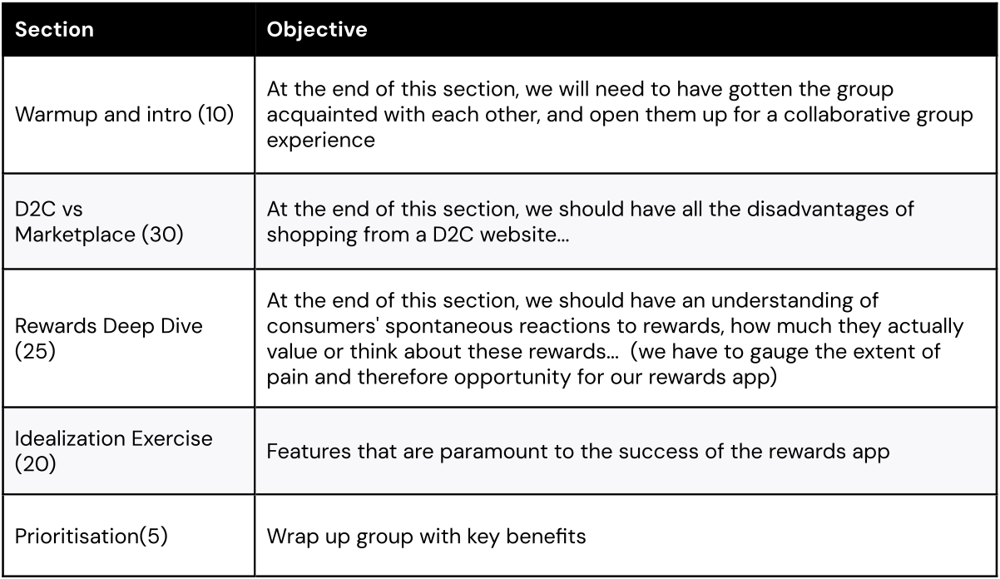

Razorpay · 2024
Testing a consumer product bet before the company made it
Razorpay, a B2B payments company, was weighing a strategic move into consumer territory: a rewards marketplace that merchants would fund and consumers would use. Before leadership committed real investment, I designed and ran a study to find out whether demand existed on either side of that marketplace. The research ended up doing more than validating the pitch; it changed what the pitch was.
- Role
- UX Researcher; designed and ran the study
- Timeline
- 10 weeks, 2024
- Working with
- A product strategist, who co-designed the study
- Method
- 25+ merchant interviews, 3 consumer focus groups, 1000+ respondent survey
- Outcome
- Informed the investment decision; reframed the value proposition
Specific findings, segment definitions, and the eventual product direction are under NDA. The research questions, the study design, and the decisions behind it are shown, along with sanitized artifacts.
Context
Razorpay's business is payments infrastructure for other businesses; ordinary consumers never touch it directly. Some competitors, however, run consumer-facing products alongside their B2B lines, and that consumer footprint was starting to win them B2B deals on name recognition. Leadership's proposed answer was a two-sided rewards marketplace: merchants fund rewards, consumers earn and redeem them across participating brands. On paper it gave Razorpay a consumer touchpoint and gave merchants an acquisition channel.
The decision in front of leadership was whether to invest in building it. My job was to make that decision better informed than a pitch deck could, and in particular to distinguish polite interest from actual demand, on both sides at once. A marketplace fails if either side fails to show up, so validating only the merchant side or only the consumer side would have answered half the question and left the riskier half as an assumption.

How the study was designed
The study ran as two parallel streams feeding one decision.
The merchant stream was 25+ in-depth interviews, around 50 minutes each, with merchant decision-makers stratified by company size, purchase frequency, and industry. The structure of each session mattered more than the count. Each one moved through four stages in a fixed order: current pain points first, then a budget-allocation exercise, then a participatory activity in which the merchant sketched their own ideal solution, and only then the direct pitch of the rewards marketplace.
That ordering was the most important design decision in the study. Asked directly whether they would pay for a rewards platform, merchants tend to say something agreeable, and an agreeable answer to a hypothetical is exactly the kind of evidence that sinks products later. So before the pitch ever appeared, each merchant allocated a fixed hypothetical budget, 100 rupees, across the problem areas in their business. Where people put constrained money reveals priorities that direct questions don't. The participatory sketching then showed us what merchants wanted built, in their own vocabulary, before our concept could anchor them.

The consumer stream began with three focus group discussions, used for what groups are genuinely good at: building shared archetypes and letting participants challenge each other's claims, which surfaces more honest reactions to a new concept than polite one-on-one agreement. The groups moved from warm-up through a comparison of D2C and marketplace shopping, a deep dive on how participants actually use rewards, an idealization exercise, and a prioritization at the end.

What the groups surfaced then shaped a survey fielded to over 1,000 respondents with a market research partner. The survey's job was to quantify the qualitative story rather than to explore: willingness to try, feature priorities, markers of trust, privacy concerns, and brand credibility, mapped against people's existing shopping behavior.

What the process surfaced
The budget exercise produced the study's most consequential pattern. Across the interviews, the rewards platform consistently ranked last. Merchants put their constrained rupees toward problems they were already losing money on: failing payments, fraud they had to absorb, support tickets that sat unanswered. A rewards program for their customers' customers read as a nice-to-have. One merchant put the underlying logic plainly: he didn't think about his customer's customer, he thought about whether the transaction goes through and who he calls when it doesn't.
The participatory sketches pointed somewhere more useful than a simple no. Asked to design their own solution, with no constraints, merchants kept describing variations of the same thing: a mechanism that made transactions and disputes with their own customers more predictable and more visible. What they were sketching was a layer of trust sitting underneath the transaction itself, which is a different product from the acquisition channel in the original pitch.
That reframing changed the consumer stream while the study was still in the field. The survey and concept work shifted weight away from "would you join a rewards program" and toward what makes someone trust a D2C purchase enough to complete it, which mapped directly onto what merchants had sketched. The two sides of the marketplace, asked independently, were describing the same underlying need, and it wasn't the one in the original pitch.
What it led to
- An informed investment decision. Leadership could decide on investment, phasing, and success metrics against evidence from both sides of the marketplace, rather than a single up-front bet on the original concept.
- A reframed value proposition. The concept moved from a rewards marketplace toward a trust and reliability layer for D2C transactions, grounded in what merchants and consumers had each described without prompting.
- A narrower go-to-market. The merchant segmentation showed where the proposition was viable and where it wasn't, supporting a focused entry rather than a broad rollout.
- A shared read across teams. Synthesis ran as a joint workshop with product, strategy, and the merchant-facing team in the room, so the overlaps and gaps between the two tracks were visible to the people making the call, while it was still being made.
Reflection
This project shaped how I scope research to the size of the decision it serves. A large strategic bet doesn't need exhaustive coverage; it needs evidence aimed at the specific assumptions the decision depends on, which here meant designing instruments that could tell genuine demand from politeness before any money moved.
It also made me permanently suspicious of validation that begins with the pitch. If we had opened the interviews by presenting the concept, we would likely have collected enough mild enthusiasm to greenlight the wrong product. The most valuable findings came from the exercises that ran before the concept entered the room, and I have built that sequencing into every concept study I've run since.